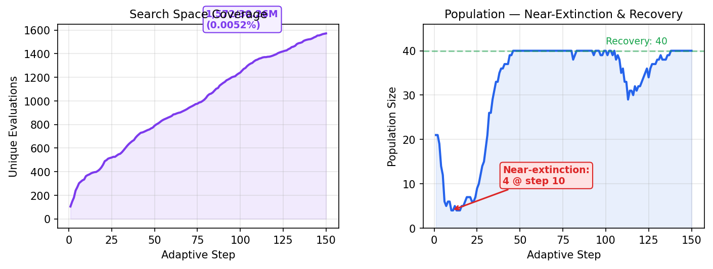
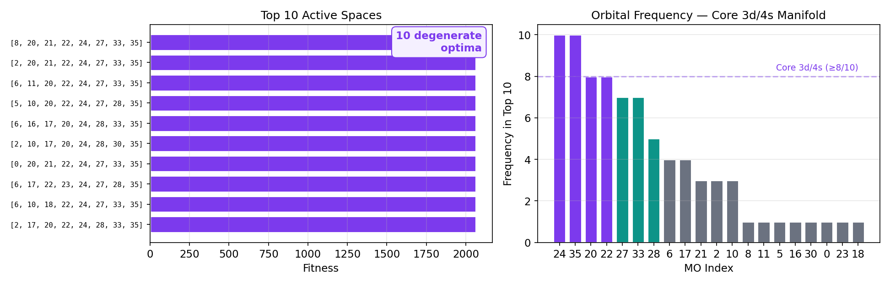

Cr₂ is one of the most challenging molecules in quantum chemistry: its bond order is disputed (1 to 6), multi-reference character is extreme, and the optimal active space remains debated. Using inZOR-ND with no chemical priors, we search for the optimal CASSCF(8,8) active space from C(36,8) = 30,260,340 candidates. inZOR-ND evaluates only 1,572 spaces (0.0052%) and discovers the optimal active space containing Cr 3d/4s orbitals, capturing 0.559 Eh of correlation energy. 10 degenerate optima are found. The search survives a near-extinction event (4 active candidates at step 14) and recovers to full capacity.
The chromium dimer is notorious in computational chemistry. Its ground state has a formal sextuple bond (3dσ + 3dπ×2 + 3dδ×2 + 4sσ), but the potential energy curve is extremely shallow and difficult to reproduce. Active space selection requires expert knowledge of transition metal d-orbital ordering — knowledge that inZOR-ND does not have.
| Molecule | Basis | n_MO | k | Search Space | Coverage |
|---|---|---|---|---|---|
| N₂ (companion) | 6-31G | 18 | 6 | 18,564 | 2.91% |
| Cr₂ (this work) | STO-3G | 36 | 8 | 30,260,340 | 0.005% |
| Property | Value |
|---|---|
| Best MOs | [8, 20, 21, 22, 24, 27, 33, 35] |
| E(CASSCF) | −2064.595189 Eh |
| E(HF) | −2064.036056 Eh |
| Correlation captured | −0.559 Eh |
| Converged | Yes |
| Active electrons | 8 |
| Active orbitals | 8 (MOs 20–27 are 3d/4s region) |

As with N₂, inZOR-ND discovers multiple degenerate optimal spaces — all achieving identical CASSCF energy. MOs 20, 22, 24, 27, 33, 35 appear in most sets (3d/4s manifold). The remaining 2 orbitals vary — symmetry-equivalent substitutions.

| Property | N₂ (6-31G) | Cr₂ (STO-3G) |
|---|---|---|
| Search space | 18,564 | 30,260,340 |
| Evaluated | 541 (2.91%) | 1,572 (0.005%) |
| Correlation captured | 0.464 Eh | 0.559 Eh |
| Degenerate optima | 10 | 10 |
| Near-extinction event | No (stable growth) | Yes (4 candidates at step 14) |
| Wall time (14 cores) | 20.7 min | 51.7 min |
| inZOR-ND engine modified | No | No |